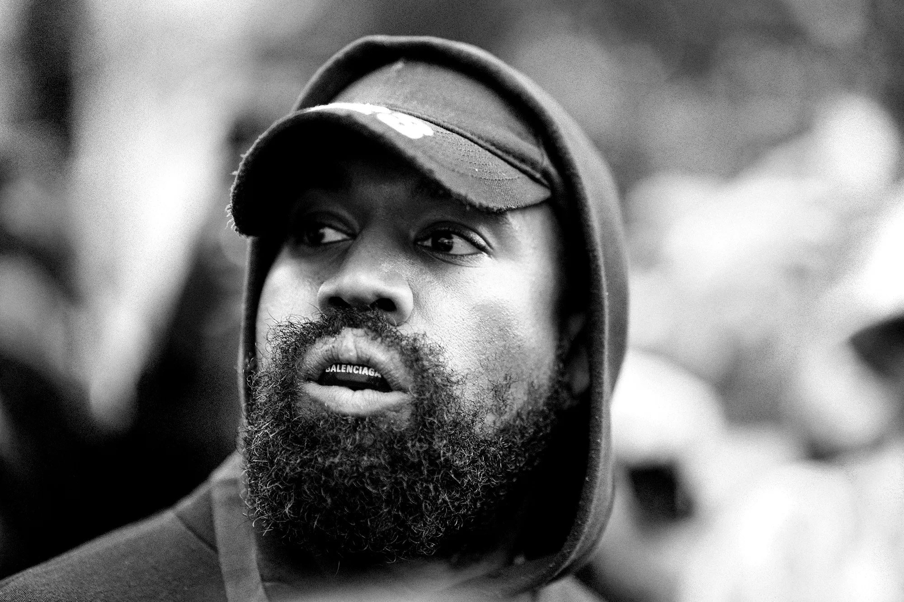

Kanye West, born June 8, 1977, in Atlanta, Georgia, is an American rapper, singer, songwriter, record producer, and fashion designer. Raised in Chicago, he emerged as a major figure in hip-hop and popular culture.
West was raised in a middle-class household and attended Chicago State University before pursuing a career in music.
Starting as a producer for Roc-A-Fella Records, he worked with high-profile artists, which led to his solo career.
